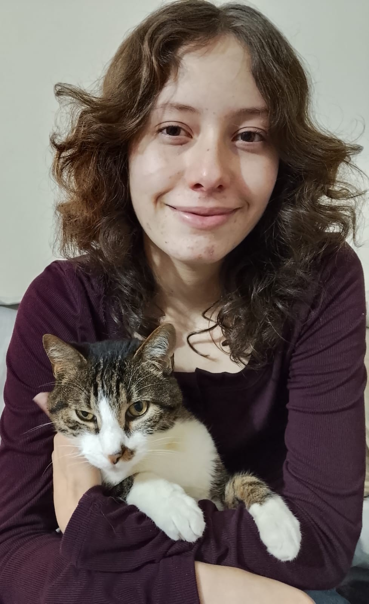

Bienvenidos
Hola, soy Sofía. En esta página aprenderás todo sobre el cuidado de los gatos, especialmente de mi gato Jacore.
Hola, soy Sofía. En esta página aprenderás todo sobre el cuidado de los gatos, especialmente de mi gato Jacore.
| Actividad | Día | Prioridad |
|---|---|---|
| Limpiar arenero | Diario | Alta |
| Cepillado | Sábado | Media |

"Un gato es un rompecabezas para el cual no existe una sola solución".